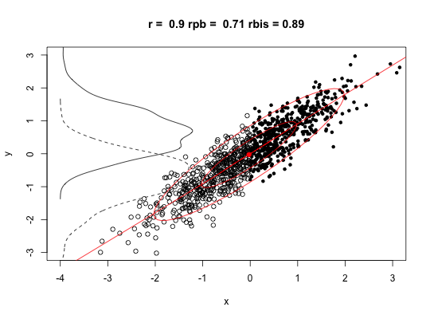
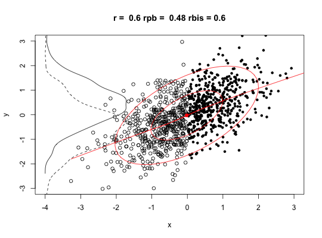
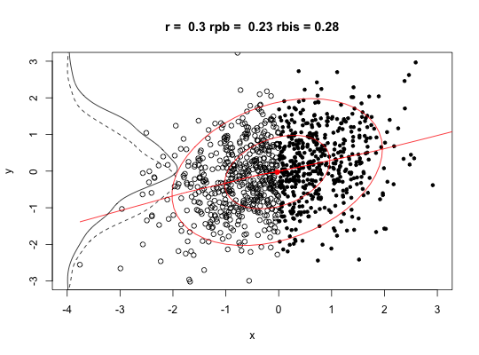
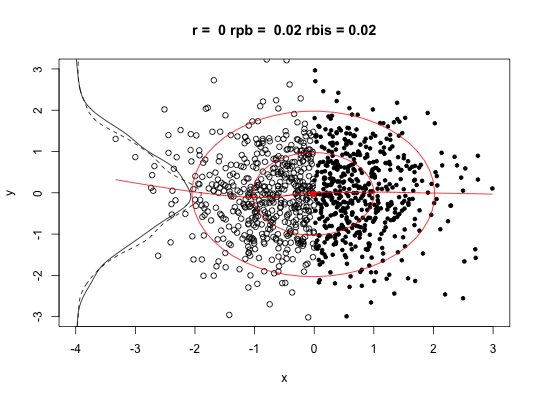

The tetrachoric correlation is the inferred Pearson Correlation from a two x two table with the assumption of bivariate normality. The polychoric correlation generalizes this to the n x m table. Particularly important when doing Item Response Theory or converting comorbidity statistics using normal theory to correlations. Input may be a 2 x 2 table of cell frequencies, a vector of cell frequencies, or a data.frame or matrix of dichotomous data (for tetrachoric) or of numeric data (for polychoric). The biserial correlation is between a continuous y variable and a dichotmous x variable, which is assumed to have resulted from a dichotomized normal variable. Biserial is a special case of the polyserial correlation, which is the inferred latent correlation between a continuous variable (X) and a ordered categorical variable (e.g., an item response). Input for these later two are data frames or matrices. Requires the mnormt package.
tetrachoric(x,y=NULL,correct=.5,smooth=TRUE,global=TRUE,weight=NULL,na.rm=TRUE, delete=TRUE) polychoric(x,smooth=TRUE,global=TRUE,polycor=FALSE,ML=FALSE, std.err=FALSE, weight=NULL,correct=.5,progress=TRUE,na.rm=TRUE, delete=TRUE) biserial(x,y) polyserial(x,y) polydi(p,d,taup,taud,global=TRUE,ML = FALSE, std.err = FALSE, weight=NULL,progress=TRUE,na.rm=TRUE,delete=TRUE,correct=.5) #deprecated use polychoric instead poly.mat(x, short = TRUE, std.err = FALSE, ML = FALSE)
| x | The input may be in one of four forms: a) a data frame or matrix of dichotmous data (e.g., the lsat6 from the bock data set) or discrete numerical (i.e., not too many levels, e.g., the big 5 data set, bfi) for polychoric, or continuous for the case of biserial and polyserial. b) a 2 x 2 table of cell counts or cell frequencies (for tetrachoric) or an n x m table of cell counts (for both tetrachoric and polychoric). c) a vector with elements corresponding to the four cell frequencies (for tetrachoric) d) a vector with elements of the two marginal frequencies (row and column) and the comorbidity (for tetrachoric) |
|---|---|
| y | A (matrix or dataframe) of discrete scores. In the case of tetrachoric, these should be dichotomous, for polychoric not too many levels, for biserial they should be discrete (e.g., item responses) with not too many (<10?) categories. |
| correct | Correction value to use to correct for continuity in the case of zero entry cell for tetrachoric, polychoric, polybi, and mixed.cor. See the examples for the effect of correcting versus not correcting for continuity. |
| smooth | if TRUE and if the tetrachoric/polychoric matrix is not positive definite, then apply a simple smoothing algorithm using cor.smooth |
| global | When finding pairwise correlations, should we use the global values of the tau parameter (which is somewhat faster), or the local values (global=FALSE)? The local option is equivalent to the polycor solution, or to doing one correlation at a time. global=TRUE borrows information for one item pair from the other pairs using those item's frequencies. This will make a difference in the presence of lots of missing data. With very small sample sizes with global=FALSE and correct=TRUE, the function will fail (for as yet underdetermined reasons. |
| polycor | A no longer used option, kept to stop other packages from breaking. |
| weight | A vector of length of the number of observations that specifies the weights to apply to each case. The NULL case is equivalent of weights of 1 for all cases. |
| short | short=TRUE, just show the correlations, short=FALSE give the full hetcor output from John Fox's hetcor function if installed and if doing polychoric Deprecated |
| std.err | std.err=FALSE does not report the standard errors (faster) deprecated |
| progress | Show the progress bar (if not doing multicores) |
| ML | ML=FALSE do a quick two step procedure, ML=TRUE, do longer maximum likelihood --- very slow! Deprecated |
| na.rm | Should missing data be deleted |
| delete | Cases with no variance are deleted with a warning before proceeding. |
| p | The polytomous input to polydi |
| d | The dichotomous input to polydi |
| taup | The tau values for the polytomous variables -- if global=TRUE |
| taud | The tau values for the dichotomous variables -- if globabl = TRUE |
Tetrachoric correlations infer a latent Pearson correlation from a two x two table of frequencies with the assumption of bivariate normality. The estimation procedure is two stage ML. Cell frequencies for each pair of items are found. In the case of tetrachorics, cells with zero counts are replaced with .5 as a correction for continuity (correct=TRUE).
The data typically will be a raw data matrix of responses to a questionnaire scored either true/false (tetrachoric) or with a limited number of responses (polychoric). In both cases, the marginal frequencies are converted to normal theory thresholds and the resulting table for each item pair is converted to the (inferred) latent Pearson correlation that would produce the observed cell frequencies with the observed marginals. (See draw.tetra and draw.cor for illustrations.)
This is a very computationally intensive function which can be speeded up considerably by using multiple cores and using the parallel package. The number of cores to use when doing polychoric or tetrachoric may be specified using the options command. The greatest step in speed is going from 1 core to 2. This is about a 50% savings. Going to 4 cores seems to have about at 66% savings, and 8 a 75% savings. The number of parallel processes defaults to 2 but can be modified by using the options command: options("mc.cores"=4) will set the number of cores to 4.
The tetrachoric correlation is used in a variety of contexts, one important one being in Item Response Theory (IRT) analyses of test scores, a second in the conversion of comorbity statistics to correlation coefficients. It is in this second context that examples of the sensitivity of the coefficient to the cell frequencies becomes apparent:
Consider the test data set from Kirk (1973) who reports the effectiveness of a ML algorithm for the tetrachoric correlation (see examples).
Examples include the lsat6 and lsat7 data sets in the bock data.
The polychoric function forms matrices of polychoric correlations by an local function (polyc) and will also report the tau values for each alternatives. Earlier versions used John Fox's polychor function which has now been replaced by the polyc function.
For finding one polychoric correlation from a table, see the Olsson example (below).
polychoric replaces poly.mat and is recommended. poly.mat was an alternative wrapper to the polycor function.
biserial and polyserial correlations are the inferred latent correlations equivalent to the observed point-biserial and point-polyserial correlations (which are themselves just Pearson correlations).
The polyserial function is meant to work with matrix or dataframe input and treats missing data by finding the pairwise Pearson r corrected by the overall (all observed cases) probability of response frequency. This is particularly useful for SAPA procedures (http://sapa-project.org) with large amounts of missing data and no complete cases.
Ability tests and personality test matrices will typically have a cleaner structure when using tetrachoric or polychoric correlations than when using the normal Pearson correlation. However, if either alpha or omega is used to find the reliability, this will be an overestimate of the squared correlation of a latent variable the observed variable.
A biserial correlation (not to be confused with the point-biserial correlation which is just a Pearson correlation) is the latent correlation between x and y where y is continuous and x is dichotomous but assumed to represent an (unobserved) continuous normal variable. Let p = probability of x level 1, and q = 1 - p. Let zp = the normal ordinate of the z score associated with p. Then, \(rbi = r s* \sqrt(pq)/zp \).
The 'ad hoc' polyserial correlation, rps is just \(r = r * sqrt(n-1)/n) \sigma y /\sum(zpi) \) where zpi are the ordinates of the normal curve at the normal equivalent of the cut point boundaries between the item responses. (Olsson, 1982)
All of these were inspired by (and adapted from) John Fox's polychor package which should be used for precise ML estimates of the correlations. See, in particular, the hetcor function in the polychor package. The results from polychoric match the polychor answers to at least 5 decimals when using correct=FALSE, and global = FALSE.
Particularly for tetrachoric correlations from sets of data with missing data, the matrix will sometimes not be positive definite. Various smoothing alternatives are possible, the one done here is to do an eigen value decomposition of the correlation matrix, set all negative eigen values to 10 * .Machine$double.eps, normalize the positive eigen values to sum to the number of variables, and then reconstitute the correlation matrix. A warning is issued when this is done.
For very small data sets, the correction for continuity for the polychoric correlations can lead to difficulties, particularly if using the global=FALSE option, or if doing just one correlation at a time. Setting a smaller correction value (i.e., correct =.1) seems to help.
John Uebersax (2015) makes the interesting point that both polychoric and tetrachoric correlations should be called latent correlations or latent continuous correlations because of the way they are found and not tetrachoric or polychoric which is the way they were found in the past. That is, what is the correlation between two latent variables that when artificially broken into two (tetrachoric) or more (polychoric) values produces the n x n table of observed frequencies.
For combinations of continous, categorical, and dichotomous variables, see mixed.cor.
If using data with a variable number of response alternatives, it is necessary to use the global=FALSE option in polychoric.
The (matrix) of tetrachoric/polychoric/biserial correlations
The normal equivalent of the cutpoints
If any correlations were adjusted for continuity, the total number of adjustments will be reported.
A. Gunther and M. Hofler. Different results on tetrachorical correlations in mplus and stata-stata announces modified procedure. Int J Methods Psychiatr Res, 15(3):157-66, 2006.
David Kirk (1973) On the numerical approximation of the bivariate normal (tetrachoric) correlation coefficient. Psychometrika, 38, 259-268.
U. Olsson, Maximum Likelihood Estimation of the Polychoric Correlation Coefficient, Psychometrika, 44:443-460.
U.Olsson, F.Drasgow, and N.Dorans (1982). The polyserial correlation coefficient. Psychometrika, 47:337-347.
For tetrachoric, in the degenerate case of a cell entry with zero observations, a correction for continuity is applied and .5 is added to the cell entry. A warning is issued. If correct=FALSE the correction is not applied. This correction is, by default, on. It can be adjusted by specifying a smaller value. See the examples.
For correct=FALSE, the results agree perfectly with John Fox's polycor function.
Switched to using sadmvn from the mnormt package to speed up by 50%.
mixed.cor to find the correlations between mixtures of continuous, polytomous, and dichtomous variables. See also the polychor function in the polycor package. irt.fa uses the tetrachoric function to do item analysis with the fa factor analysis function.
draw.tetra shows the logic behind a tetrachoric correlation (for teaching purpuses.)
#if(require(mnormt)) { data(bock) tetrachoric(lsat6)#>#> Call: tetrachoric(x = lsat6) #> tetrachoric correlation #> Q1 Q2 Q3 Q4 Q5 #> Q1 1.00 #> Q2 0.17 1.00 #> Q3 0.23 0.19 1.00 #> Q4 0.11 0.11 0.19 1.00 #> Q5 0.07 0.17 0.11 0.20 1.00 #> #> with tau of #> Q1 Q2 Q3 Q4 Q5 #> -1.43 -0.55 -0.13 -0.72 -1.13polychoric(lsat6) #values should be the same#> Call: polychoric(x = lsat6) #> Polychoric correlations #> Q1 Q2 Q3 Q4 Q5 #> Q1 1.00 #> Q2 0.17 1.00 #> Q3 0.23 0.19 1.00 #> Q4 0.11 0.11 0.19 1.00 #> Q5 0.07 0.17 0.11 0.20 1.00 #> #> with tau of #> 1 #> Q1 -1.43 #> Q2 -0.55 #> Q3 -0.13 #> Q4 -0.72 #> Q5 -1.13tetrachoric(matrix(c(44268,193,14,0),2,2)) #MPLUS reports.24#>#> Call: tetrachoric(x = matrix(c(44268, 193, 14, 0), 2, 2)) #> tetrachoric correlation #> [1] 0.23 #> #> with tau of #> [1] 2.6 3.4#Do not apply continuity correction -- compare with previous analysis! tetrachoric(matrix(c(44268,193,14,0),2,2),correct=0)#> Call: tetrachoric(x = matrix(c(44268, 193, 14, 0), 2, 2), correct = 0) #> tetrachoric correlation #> [1] -0.71 #> #> with tau of #> [1] 2.6 3.4#the default is to add correct=.5 to 0 cells tetrachoric(matrix(c(61661,1610,85,20),2,2)) #Mplus reports .35#> Call: tetrachoric(x = matrix(c(61661, 1610, 85, 20), 2, 2)) #> tetrachoric correlation #> [1] 0.35 #> #> with tau of #> [1] 1.9 2.9tetrachoric(matrix(c(62503,105,768,0),2,2)) #Mplus reports -.10#>#> Call: tetrachoric(x = matrix(c(62503, 105, 768, 0), 2, 2)) #> tetrachoric correlation #> [1] -0.1 #> #> with tau of #> [1] 2.9 2.3tetrachoric(matrix(c(24875,265,47,0),2,2)) #Mplus reports 0#>#> Call: tetrachoric(x = matrix(c(24875, 265, 47, 0), 2, 2)) #> tetrachoric correlation #> [1] -0.00016 #> #> with tau of #> [1] 2.3 2.9polychoric(matrix(c(61661,1610,85,20),2,2)) #Mplus reports .35#> [1] "You seem to have a table, I will return just one correlation."#> $rho #> [1] 0.3480731 #> #> $objective #> [1] 0.131411 #> #> $tau.row #> [1] 1.947799 #> #> $tau.col #> [1] 2.937045 #>polychoric(matrix(c(62503,105,768,0),2,2)) #Mplus reports -.10#> [1] "You seem to have a table, I will return just one correlation."#> $rho #> [1] -0.1019161 #> #> $objective #> [1] 0.0778664 #> #> $tau.row #> [1] 2.937045 #> #> $tau.col #> [1] 2.253362 #>polychoric(matrix(c(24875,265,47,0),2,2)) #Mplus reports 0#> [1] "You seem to have a table, I will return just one correlation."#> $rho #> [1] -0.000161322 #> #> $objective #> [1] 0.07218902 #> #> $tau.row #> [1] 2.307219 #> #> $tau.col #> [1] 2.899962 #>#Do not apply continuity correction- compare with previous analysis tetrachoric(matrix(c(24875,265,47,0),2,2), correct=0)#> Call: tetrachoric(x = matrix(c(24875, 265, 47, 0), 2, 2), correct = 0) #> tetrachoric correlation #> [1] -0.83 #> #> with tau of #> [1] 2.3 2.9polychoric(matrix(c(24875,265,47,0),2,2), correct=0) #the same result#> [1] "You seem to have a table, I will return just one correlation."#> $rho #> [1] -0.8263137 #> #> $objective #> [1] 0.07195411 #> #> $tau.row #> [1] 2.307219 #> #> $tau.col #> [1] 2.899962 #>#examples from Kirk 1973 #note that Kirk's tables have joint probability followed by marginals, but #tetrachoric needs marginals followed by joint probability tetrachoric(c(.5,.5,.333333)) #should be .5#> Call: tetrachoric(x = c(0.5, 0.5, 0.333333)) #> tetrachoric correlation #> [1] 0.5 #> #> with tau of #> [1] 0 0tetrachoric(c(.5,.5,.1150267)) #should be -.75#> Call: tetrachoric(x = c(0.5, 0.5, 0.1150267)) #> tetrachoric correlation #> [1] -0.75 #> #> with tau of #> [1] 0 0tetrachoric(c(.5,.5,.397584)) #should e .8#> Call: tetrachoric(x = c(0.5, 0.5, 0.397584)) #> tetrachoric correlation #> [1] 0.8 #> #> with tau of #> [1] 0 0tetrachoric(c(.158655254,.158655254,.145003)) #should be .99#> Call: tetrachoric(x = c(0.158655254, 0.158655254, 0.145003)) #> tetrachoric correlation #> [1] 0.99 #> #> with tau of #> [1] -1 -1#the example from Olsson, 1979 x <- as.table(matrix(c(13,69,41,6,113,132,0,22,104),3,3)) polychoric(x,correct=FALSE)#> [1] "You seem to have a table, I will return just one correlation."#> $rho #> [1] 0.4913712 #> #> $objective #> [1] 1.781665 #> #> $tau.row #> A B #> -1.7743819 -0.1357739 #> #> $tau.col #> A B #> -0.6871313 0.6682093 #>#Olsson reports rho = .49, tau row = -1.77, -.14 and tau col = -.69, .67 #give a vector of two marginals and the comorbidity tetrachoric(c(.2, .15, .1))#> Call: tetrachoric(x = c(0.2, 0.15, 0.1)) #> tetrachoric correlation #> [1] 0.75 #> #> with tau of #> [1] -1.04 -0.84tetrachoric(c(.2, .1001, .1))#> Call: tetrachoric(x = c(0.2, 0.1001, 0.1)) #> tetrachoric correlation #> [1] 0.98 #> #> with tau of #> [1] -1.28 -0.84#} else { # message("Sorry, you must have mnormt installed")} # 4 plots comparing biserial to point biserial and latent Pearson correlation set.seed(42) x.4 <- sim.congeneric(loads =c(.9,.6,.3,0),N=1000,short=FALSE) y <- x.4$latent[,1] for(i in 1:4) { x <- x.4$observed[,i] r <- round(cor(x,y),1) ylow <- y[x<= 0] yhigh <- y[x > 0] yc <- c(ylow,yhigh) rpb <- round(cor((x>=0),y),2) rbis <- round(biserial(y,(x>=0)),2) ellipses(x,y,ylim=c(-3,3),xlim=c(-4,3),pch=21 - (x>0), main =paste("r = ",r,"rpb = ",rpb,"rbis =",rbis)) dlow <- density(ylow) dhigh <- density(yhigh) points(dlow$y*5-4,dlow$x,typ="l",lty="dashed") lines(dhigh$y*5-4,dhigh$x,typ="l") }#>#>#>#>